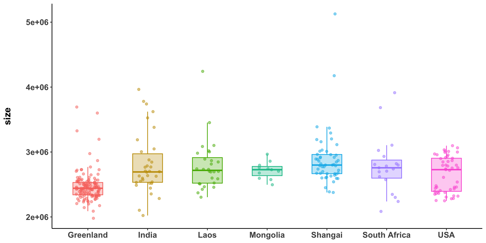
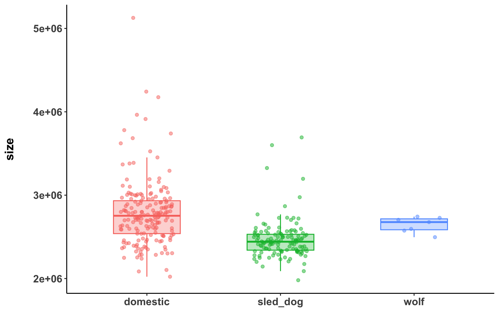
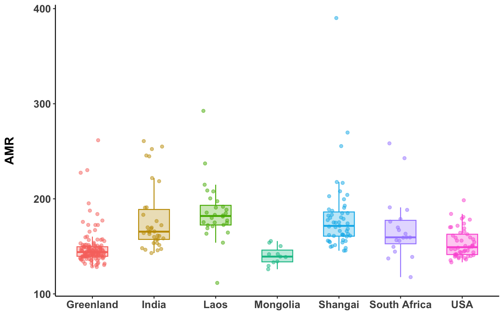
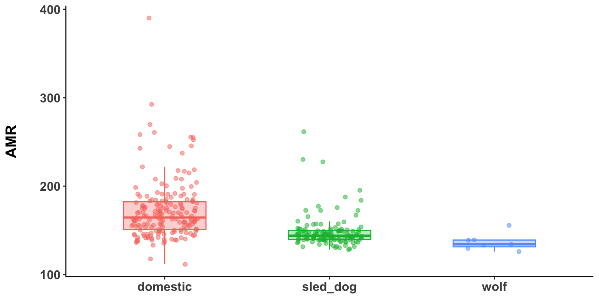
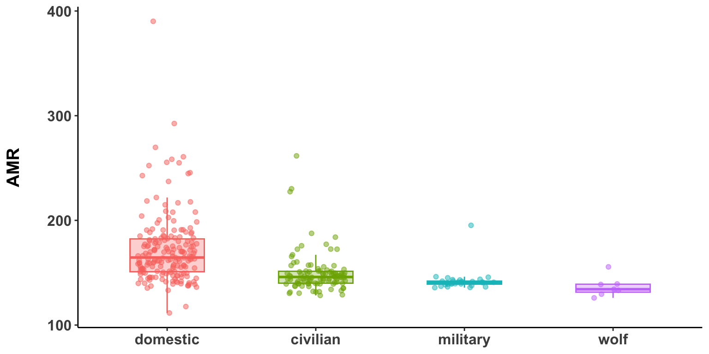
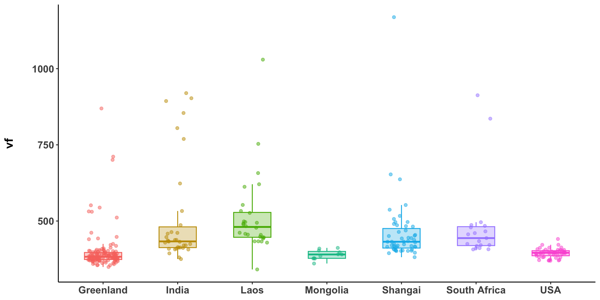
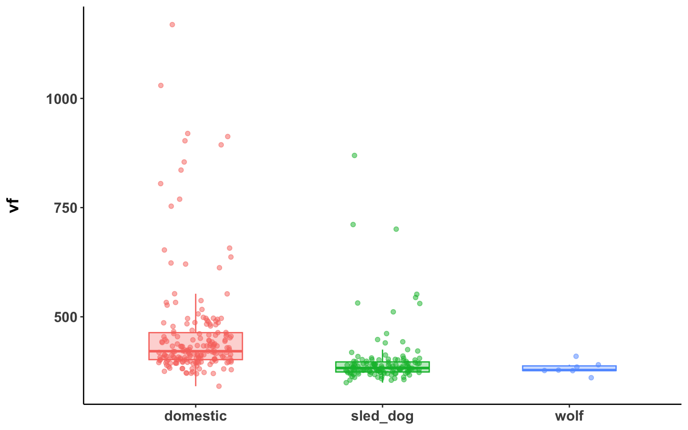
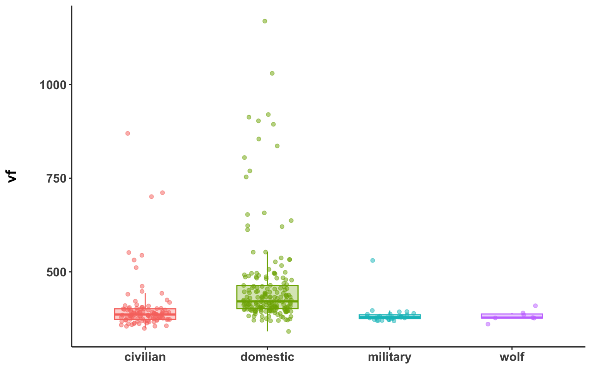
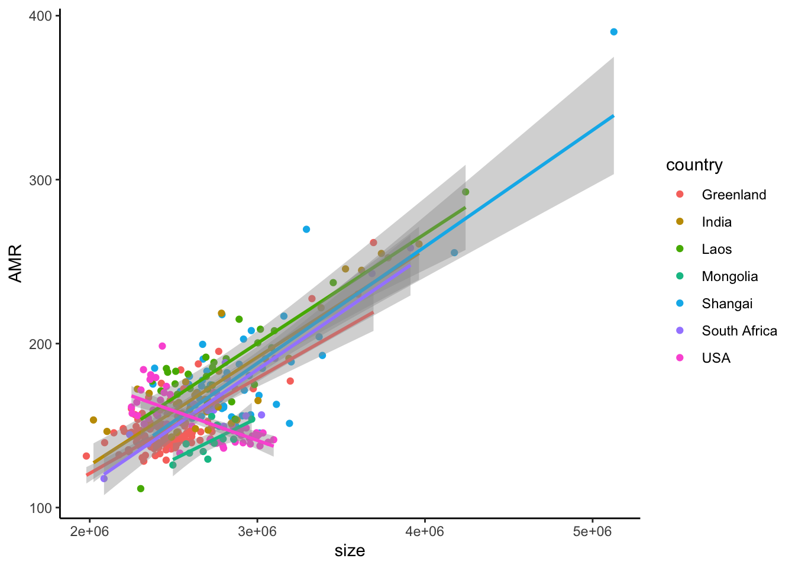
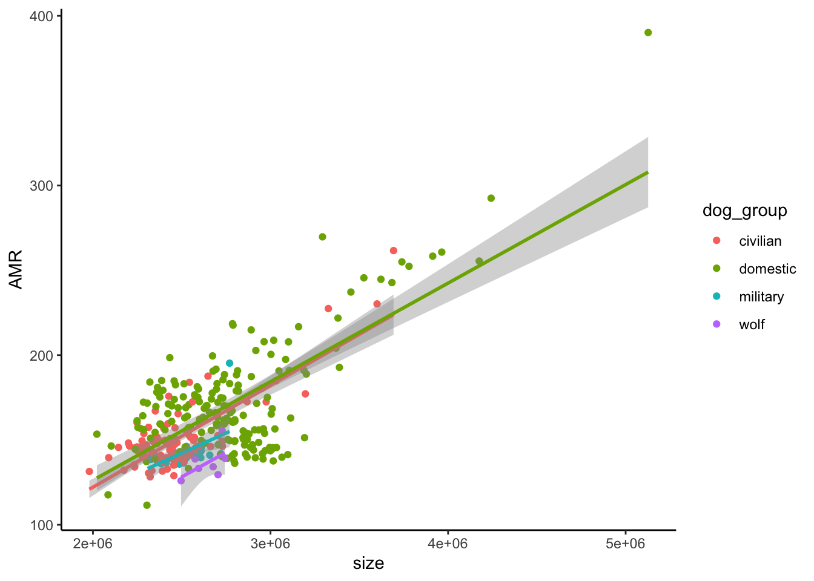

Chapter 9 AMR and VF
load("data/data.Rdata")
load("data/alpha_all.Rdata")
genome_metadata <- genome_metadata %>%
mutate(phylum = case_when(
phylum == "Bacillota_A" ~ "Bacillota",
phylum == "Bacillota_C" ~ "Bacillota",
phylum == "Bacillota_B" ~ "Bacillota",
phylum == "Bacillota_I" ~ "Bacillota",
TRUE ~ phylum))
remove_sled <- read_csv("data/sample_metadata.csv") %>%
filter(season=="winter")
sample_metadata <- sample_metadata %>%
mutate(country = if_else(country == "Shangai domestic dog", "Shangai", country)) %>%
filter(!sample %in% remove_sled$sample) %>%
mutate(
dog_type = case_when(
breed == "Wolf" ~ "wolf",
country == "Greenland" ~ "sled_dog",
TRUE ~ "domestic"
)
)%>%
mutate(
dog_group = case_when(
breed == "Wolf" ~ "wolf",
locality == "Disko" ~ "civilian",
locality == "Daneborg" ~ "military",
locality == "Illulissat" ~ "civilian",
locality == "Ittoqqortoormiit" ~ "civilian",
TRUE ~ "domestic"
)
)
genome_counts_filt <- genome_counts_filt %>%
select(one_of(c("genome",sample_metadata$sample)))%>%
filter(rowSums(. != 0, na.rm = TRUE) > 0) %>%
select_if(~!all(. == 0))
genome_metadata <- genome_metadata %>%
semi_join(., genome_counts_filt, by = "genome") %>%
arrange(match(genome,genome_counts_filt$genome))
genome_tree <- keep.tip(genome_tree, tip=genome_metadata$genome)genome_annotations <- read_tsv("data/gene_annotations.tsv.xz") %>%
mutate(genome = str_extract(gene, "^[^^]+")) %>%
mutate(ec = str_c("[EC:",ec,"]")) %>%
select(genome, everything())9.1 Genome size
sample_genome_size <- genome_counts_filt %>%
mutate(across(-genome,~ .x / sum(.x, na.rm = TRUE))) %>%
inner_join(genome_metadata %>% select(genome,length), by = "genome") %>%
pivot_longer(
cols = -c(genome, length),
names_to = "sample",
values_to = "rel_abundance"
) %>%
group_by(sample) %>%
summarise(
size = weighted.mean(length, w = rel_abundance, na.rm = TRUE),
.groups = "drop"
) %>%
left_join(sample_metadata,by="sample")Country
sample_genome_size %>%
group_by(country) %>%
summarise(
mean = mean(size, na.rm = T)/1000000,
sd = sd(size, na.rm = T)/1000000) %>%
arrange(-mean) %>%
mutate(genome_size=str_c(round(mean,3),"±",round(sd,3))) %>%
select(country,genome_size) # A tibble: 7 × 2
country genome_size
<chr> <chr>
1 Shangai 2.894±0.436
2 India 2.809±0.472
3 Laos 2.788±0.385
4 South Africa 2.786±0.445
5 Mongolia 2.718±0.133
6 USA 2.656±0.273
7 Greenland 2.471±0.232sample_genome_size %>%
kruskal_test(size ~ country) %>%
adjust_pvalue(method = "BH") %>%
filter(p.adj < 0.05) %>%
tt()| .y. | n | statistic | df | p | method | p.adj |
|---|---|---|---|---|---|---|
| size | 322 | 95.22593 | 6 | 2.48e-18 | Kruskal-Wallis | 2.48e-18 |
# A tibble: 7 × 9
.y. group1 group2 n1 n2 statistic p p.adj p.adj.signif
<chr> <chr> <chr> <int> <int> <dbl> <dbl> <dbl> <chr>
1 size Greenland India 130 34 924 1.84e- 7 1.29e- 6 ****
2 size Greenland Laos 130 28 656 1.17e- 7 1.23e- 6 ****
3 size Greenland Mongolia 130 11 150 1.43e- 5 7.51e- 5 ****
4 size Greenland Shangai 130 51 626 2.29e-17 4.81e-16 ****
5 size Greenland South Africa 130 19 569 1.52e- 4 6.38e- 4 ***
6 size Greenland USA 130 49 2031 1.9 e- 4 6.65e- 4 ***
7 size Shangai USA 51 49 1652 6 e- 3 1.7 e- 2 * # A tibble: 14 × 9
.y. group1 group2 n1 n2 statistic p p.adj p.adj.signif
<chr> <chr> <chr> <int> <int> <dbl> <dbl> <dbl> <chr>
1 size India Laos 34 28 466 0.894 0.939 ns
2 size India Mongolia 34 11 177 0.805 0.939 ns
3 size India Shangai 34 51 669 0.076 0.201 ns
4 size India South Africa 34 19 303 0.72 0.889 ns
5 size India USA 34 49 946 0.299 0.51 ns
6 size Laos Mongolia 28 11 157 0.939 0.939 ns
7 size Laos Shangai 28 51 575 0.156 0.328 ns
8 size Laos South Africa 28 19 261 0.923 0.939 ns
9 size Laos USA 28 49 801 0.227 0.433 ns
10 size Mongolia Shangai 11 51 199 0.136 0.317 ns
11 size Mongolia South Africa 11 19 94 0.672 0.882 ns
12 size Mongolia USA 11 49 294 0.651 0.882 ns
13 size Shangai South Africa 51 19 561 0.316 0.51 ns
14 size South Africa USA 19 49 510 0.551 0.827 ns sample_genome_size %>%
ggplot(aes(x = country, y = size, color = country, fill = country)) +
geom_jitter(width = 0.2, alpha=0.5, show.legend = FALSE) +
geom_boxplot(width = 0.5, alpha=0.3,outlier.shape = NA, show.legend = FALSE) +
theme_classic() +
theme(
axis.text = element_text(face = "bold", size = 12),
strip.background = element_blank(),
axis.title.y = element_text(face = "bold", size = 14, margin = margin(t = 0, r = 20, b = 0, l = 0)),
axis.title.x = element_blank()
)
Dog type
sample_genome_size %>%
group_by(dog_type) %>%
summarise(
mean = mean(size, na.rm = T)/1000000,
sd = sd(size, na.rm = T)/1000000) %>%
arrange(-mean) %>%
mutate(length=str_c(round(mean,3),"±",round(sd,3))) %>%
select(dog_type,length) # A tibble: 3 × 2
dog_type length
<chr> <chr>
1 domestic 2.787±0.4
2 wolf 2.645±0.092
3 sled_dog 2.471±0.232sample_genome_size %>%
kruskal_test(size ~ dog_type) %>%
adjust_pvalue(method = "BH") %>%
filter(p.adj < 0.05) %>%
tt()| .y. | n | statistic | df | p | method | p.adj |
|---|---|---|---|---|---|---|
| size | 322 | 84.50347 | 2 | 4.47e-19 | Kruskal-Wallis | 4.47e-19 |
# A tibble: 2 × 9
.y. group1 group2 n1 n2 statistic p p.adj p.adj.signif
<chr> <chr> <chr> <int> <int> <dbl> <dbl> <dbl> <chr>
1 size domestic sled_dog 185 130 19220 1.56e-19 4.68e-19 ****
2 size sled_dog wolf 130 7 126 1 e- 3 2 e- 3 ** # A tibble: 1 × 9
.y. group1 group2 n1 n2 statistic p p.adj p.adj.signif
<chr> <chr> <chr> <int> <int> <dbl> <dbl> <dbl> <chr>
1 size domestic wolf 185 7 821 0.231 0.231 ns Civilian vs Military
sample_genome_size %>%
group_by(dog_group) %>%
summarise(
mean = mean(size, na.rm = T)/1000000,
sd = sd(size, na.rm = T)/1000000) %>%
arrange(-mean) %>%
mutate(genome_size=str_c(round(mean,3),"±",round(sd,3))) %>%
select(dog_group,genome_size) # A tibble: 4 × 2
dog_group genome_size
<chr> <chr>
1 domestic 2.787±0.4
2 wolf 2.645±0.092
3 military 2.503±0.112
4 civilian 2.462±0.256sample_genome_size %>%
kruskal_test(size ~ dog_group) %>%
adjust_pvalue(method = "BH") %>%
filter(p.adj < 0.05) %>%
tt()| .y. | n | statistic | df | p | method | p.adj |
|---|---|---|---|---|---|---|
| size | 322 | 86.41478 | 3 | 1.29e-18 | Kruskal-Wallis | 1.29e-18 |
sample_genome_size %>%
wilcox_test(size ~ dog_group, p.adjust.method = "BH")%>%
filter(p.adj < 0.05)# A tibble: 5 × 9
.y. group1 group2 n1 n2 statistic p p.adj p.adj.signif
<chr> <chr> <chr> <int> <int> <dbl> <dbl> <dbl> <chr>
1 size civilian domestic 101 185 3628 1.26e-17 7.56e-17 ****
2 size civilian military 101 29 986 8 e- 3 9 e- 3 **
3 size civilian wolf 101 7 90 1 e- 3 2 e- 3 **
4 size domestic military 185 29 4163 1.81e- 6 5.43e- 6 ****
5 size military wolf 29 7 36 7 e- 3 9 e- 3 ** sample_genome_size %>%
wilcox_test(size ~ dog_group, p.adjust.method = "BH")%>%
filter(p.adj > 0.05)# A tibble: 1 × 9
.y. group1 group2 n1 n2 statistic p p.adj p.adj.signif
<chr> <chr> <chr> <int> <int> <dbl> <dbl> <dbl> <chr>
1 size domestic wolf 185 7 821 0.231 0.231 ns sample_genome_size %>%
ggplot(aes(x = dog_type, y = size, color = dog_type, fill = dog_type)) +
geom_jitter(width = 0.2, alpha=0.5, show.legend = FALSE) +
geom_boxplot(width = 0.5, alpha=0.3,outlier.shape = NA, show.legend = FALSE) +
theme_classic() +
theme(
axis.text = element_text(face = "bold", size = 12),
strip.background = element_blank(),
axis.title.y = element_text(face = "bold", size = 14, margin = margin(t = 0, r = 20, b = 0, l = 0)),
axis.title.x = element_blank()
)
9.2 AMR
genome_amr <- genome_annotations %>%
group_by(genome) %>%
summarise(AMR = sum(resistance_type == "AMR", na.rm = TRUE), .groups = "drop")sample_amr <- genome_counts_filt %>%
mutate(across(-genome,~ .x / sum(.x, na.rm = TRUE))) %>%
inner_join(genome_amr, by = "genome") %>%
pivot_longer(
cols = -c(genome, AMR),
names_to = "sample",
values_to = "rel_abundance"
) %>%
group_by(sample) %>%
summarise(
AMR = weighted.mean(AMR, w = rel_abundance, na.rm = TRUE),
.groups = "drop"
) %>%
left_join(sample_metadata,by="sample")Country
sample_amr %>%
group_by(country) %>%
summarise(
mean = mean(AMR, na.rm = T),
sd = sd(AMR, na.rm = T)) %>%
arrange(-mean) %>%
mutate(AMR=str_c(round(mean,3),"±",round(sd,3))) %>%
select(country,AMR) # A tibble: 7 × 2
country AMR
<chr> <chr>
1 Laos 186.001±30.514
2 Shangai 180.505±39.145
3 India 179.09±35.449
4 South Africa 169.145±33.83
5 USA 153.392±15.129
6 Greenland 148.235±18.206
7 Mongolia 140.39±9.673 sample_amr %>%
ggplot(aes(x=country,y=AMR,color=country,fill=country)) +
geom_jitter(width = 0.2, alpha=0.5, show.legend = FALSE) +
geom_boxplot(width = 0.5, alpha=0.3,outlier.shape = NA, show.legend = FALSE) +
theme_classic() +
theme(
axis.text = element_text(face = "bold", size = 12),
strip.background = element_blank(),
axis.title.y = element_text(face = "bold", size = 14, margin = margin(t = 0, r = 20, b = 0, l = 0)),
axis.title.x = element_blank()
)
sample_amr %>%
kruskal_test(AMR ~ country) %>%
adjust_pvalue(method = "BH") %>%
filter(p.adj < 0.05) %>%
tt()| .y. | n | statistic | df | p | method | p.adj |
|---|---|---|---|---|---|---|
| AMR | 322 | 134.2987 | 6 | 1.6e-26 | Kruskal-Wallis | 1.6e-26 |
# A tibble: 15 × 9
.y. group1 group2 n1 n2 statistic p p.adj p.adj.signif
<chr> <chr> <chr> <int> <int> <dbl> <dbl> <dbl> <chr>
1 AMR Greenland India 130 34 555 1.93e-11 1.35e-10 ****
2 AMR Greenland Laos 130 28 311 6.47e-12 6.79e-11 ****
3 AMR Greenland Shangai 130 51 645 3.82e-17 8.02e-16 ****
4 AMR Greenland South Africa 130 19 583 2.09e- 4 4.39e- 4 ***
5 AMR Greenland USA 130 49 2385 1 e- 2 1.5 e- 2 *
6 AMR India Laos 34 28 311 1.9 e- 2 2.7 e- 2 *
7 AMR India Mongolia 34 11 353 6.35e- 7 1.9 e- 6 ****
8 AMR India USA 34 49 1275 2.56e- 5 5.97e- 5 ****
9 AMR Laos Mongolia 28 11 295 4.42e- 7 1.55e- 6 ****
10 AMR Laos South Africa 28 19 391 6 e- 3 1 e- 2 *
11 AMR Laos USA 28 49 1217 1.02e- 9 5.36e- 9 ****
12 AMR Mongolia Shangai 11 51 20 1.66e- 6 4.36e- 6 ****
13 AMR Mongolia South Africa 11 19 30 8.09e- 4 2 e- 3 **
14 AMR Mongolia USA 11 49 129 6 e- 3 1 e- 2 *
15 AMR Shangai USA 51 49 2033 6.70e- 8 2.81e- 7 **** # A tibble: 6 × 9
.y. group1 group2 n1 n2 statistic p p.adj p.adj.signif
<chr> <chr> <chr> <int> <int> <dbl> <dbl> <dbl> <chr>
1 AMR Greenland Mongolia 130 11 940 0.084 0.098 ns
2 AMR India Shangai 34 51 782 0.448 0.448 ns
3 AMR India South Africa 34 19 376 0.333 0.35 ns
4 AMR Laos Shangai 28 51 912 0.043 0.053 ns
5 AMR Shangai South Africa 51 19 605 0.113 0.125 ns
6 AMR South Africa USA 19 49 616 0.04 0.052 ns Domestic vs sled vs wolf
sample_amr %>%
group_by(dog_type) %>%
summarise(
mean = mean(AMR, na.rm = T),
sd = sd(AMR, na.rm = T)) %>%
arrange(-mean) %>%
mutate(AMR=str_c(round(mean,3),"±",round(sd,3))) %>%
select(dog_type,AMR) # A tibble: 3 × 2
dog_type AMR
<chr> <chr>
1 domestic 172.003±33.415
2 sled_dog 148.235±18.206
3 wolf 136.645±9.598 sample_amr %>%
ggplot(aes(x=dog_type,y=AMR,color=dog_type,fill=dog_type)) +
geom_jitter(width = 0.2, alpha=0.5, show.legend = FALSE) +
geom_boxplot(width = 0.5, alpha=0.3,outlier.shape = NA, show.legend = FALSE) +
theme_classic() +
theme(
axis.text = element_text(face = "bold", size = 12),
strip.background = element_blank(),
axis.title.y = element_text(face = "bold", size = 14, margin = margin(t = 0, r = 20, b = 0, l = 0)),
axis.title.x = element_blank()
)
sample_amr %>%
kruskal_test(AMR ~ dog_type) %>%
adjust_pvalue(method = "BH") %>%
filter(p.adj < 0.05) %>%
tt()| .y. | n | statistic | df | p | method | p.adj |
|---|---|---|---|---|---|---|
| AMR | 322 | 94.64412 | 2 | 2.81e-21 | Kruskal-Wallis | 2.81e-21 |
# A tibble: 3 × 9
.y. group1 group2 n1 n2 statistic p p.adj p.adj.signif
<chr> <chr> <chr> <int> <int> <dbl> <dbl> <dbl> <chr>
1 AMR domestic sled_dog 185 130 19362 3 e-20 9 e-20 ****
2 AMR domestic wolf 185 7 1207 1.07e- 4 1.6 e- 4 ***
3 AMR sled_dog wolf 130 7 731 7 e- 3 7 e- 3 ** Civilian & Military
sample_amr %>%
group_by(dog_group) %>%
summarise(
mean = mean(AMR, na.rm = T),
sd = sd(AMR, na.rm = T)) %>%
arrange(-mean) %>%
mutate(AMR=str_c(round(mean,3),"±",round(sd,3))) %>%
select(dog_group,AMR) # A tibble: 4 × 2
dog_group AMR
<chr> <chr>
1 domestic 172.003±33.415
2 civilian 149.918±19.587
3 military 142.376±10.547
4 wolf 136.645±9.598 sample_amr %>%
kruskal_test(AMR ~ dog_group) %>%
adjust_pvalue(method = "BH") %>%
filter(p.adj < 0.05) %>%
tt()| .y. | n | statistic | df | p | method | p.adj |
|---|---|---|---|---|---|---|
| AMR | 322 | 100.8331 | 3 | 1.03e-21 | Kruskal-Wallis | 1.03e-21 |
Significant
# A tibble: 6 × 9
.y. group1 group2 n1 n2 statistic p p.adj p.adj.signif
<chr> <chr> <chr> <int> <int> <dbl> <dbl> <dbl> <chr>
1 AMR civilian domestic 101 185 4107 4.84e-15 2.90e-14 ****
2 AMR civilian military 101 29 2096 4.17e- 4 6.26e- 4 ***
3 AMR civilian wolf 101 7 571 7 e- 3 8 e- 3 **
4 AMR domestic military 185 29 4784 1.23e-11 3.69e-11 ****
5 AMR domestic wolf 185 7 1207 1.07e- 4 2.14e- 4 ***
6 AMR military wolf 29 7 160 1.8 e- 2 1.8 e- 2 * Non-sig
# A tibble: 0 × 9
# ℹ 9 variables: .y. <chr>, group1 <chr>, group2 <chr>, n1 <int>, n2 <int>, statistic <dbl>, p <dbl>, p.adj <dbl>, p.adj.signif <chr>sample_amr %>%
mutate(dog_group=factor(dog_group,levels=c("domestic","civilian","military", "wolf"))) %>%
ggplot(aes(x=dog_group, y=AMR, color=dog_group, fill=dog_group)) +
geom_jitter(width = 0.2, alpha=0.5, show.legend = FALSE) +
geom_boxplot(width = 0.5, alpha=0.3,outlier.shape = NA, show.legend = FALSE) +
theme_classic() +
theme(
axis.text = element_text(face = "bold", size = 12),
strip.background = element_blank(),
axis.title.y = element_text(face = "bold", size = 14, margin = margin(t = 0, r = 20, b = 0, l = 0)),
axis.title.x = element_blank()
)
9.3 Virulence factors
genome_vf <- genome_annotations %>%
group_by(genome) %>%
summarise(vf = sum(!is.na(vf_type), na.rm = TRUE), .groups = "drop")
sample_vf <- genome_counts_filt %>%
mutate(across(-genome,~ .x / sum(.x, na.rm = TRUE))) %>%
inner_join(genome_vf, by = "genome") %>%
pivot_longer(
cols = -c(genome, vf),
names_to = "sample",
values_to = "rel_abundance"
) %>%
group_by(sample) %>%
summarise(
vf = weighted.mean(vf, w = rel_abundance, na.rm = TRUE),
.groups = "drop"
) %>%
left_join(sample_metadata,by="sample")Country
sample_vf %>%
group_by(country) %>%
summarise(
mean = mean(vf, na.rm = T),
sd = sd(vf, na.rm = T)) %>%
arrange(-mean) %>%
mutate(virulence=str_c(round(mean,3),"±",round(sd,3))) %>%
select(country,virulence) # A tibble: 7 × 2
country virulence
<chr> <chr>
1 Laos 514.258±130.429
2 India 510.465±170.474
3 South Africa 488.145±139.803
4 Shangai 461.505±115.526
5 Greenland 399.475±66.268
6 USA 394.914±14.759
7 Mongolia 389.072±15.69 sample_vf %>%
ggplot(aes(x=country,y=vf,color=country,fill=country)) +
geom_jitter(width = 0.2, alpha=0.5, show.legend = FALSE) +
geom_boxplot(width = 0.5, alpha=0.3,outlier.shape = NA, show.legend = FALSE) +
theme_classic() +
theme(
axis.text = element_text(face = "bold", size = 12),
strip.background = element_blank(),
axis.title.y = element_text(face = "bold", size = 14, margin = margin(t = 0, r = 20, b = 0, l = 0)),
axis.title.x = element_blank()
)
sample_vf %>%
kruskal_test(vf ~ country) %>%
adjust_pvalue(method = "BH") %>%
filter(p.adj < 0.05) %>%
tt()| .y. | n | statistic | df | p | method | p.adj |
|---|---|---|---|---|---|---|
| vf | 322 | 159.2174 | 6 | 8.67e-32 | Kruskal-Wallis | 8.67e-32 |
# A tibble: 15 × 9
.y. group1 group2 n1 n2 statistic p p.adj p.adj.signif
<chr> <chr> <chr> <int> <int> <dbl> <dbl> <dbl> <chr>
1 vf Greenland India 130 34 514 6.09e-12 2.91e-11 ****
2 vf Greenland Laos 130 28 335 1.38e-11 4.83e-11 ****
3 vf Greenland Shangai 130 51 735 4.13e-16 8.67e-15 ****
4 vf Greenland South Africa 130 19 206 4.82e- 9 1.27e- 8 ****
5 vf Greenland USA 130 49 2169 1 e- 3 2 e- 3 **
6 vf India Laos 34 28 309 1.8 e- 2 2.5 e- 2 *
7 vf India Mongolia 34 11 345 3.64e- 6 6.95e- 6 ****
8 vf India USA 34 49 1495 2.06e-11 6.18e-11 ****
9 vf Laos Mongolia 28 11 297 2.33e- 7 5.44e- 7 ****
10 vf Laos Shangai 28 51 1056 4.65e- 4 7.51e- 4 ***
11 vf Laos USA 28 49 1319 5.40e-15 5.67e-14 ****
12 vf Mongolia Shangai 11 51 39 8.96e- 6 1.57e- 5 ****
13 vf Mongolia South Africa 11 19 6 1.10e- 6 2.31e- 6 ****
14 vf Shangai USA 51 49 2265 2.58e-12 1.81e-11 ****
15 vf South Africa USA 19 49 894 6.93e-12 2.91e-11 **** # A tibble: 6 × 9
.y. group1 group2 n1 n2 statistic p p.adj p.adj.signif
<chr> <chr> <chr> <int> <int> <dbl> <dbl> <dbl> <chr>
1 vf Greenland Mongolia 130 11 627 0.501 0.547 ns
2 vf India Shangai 34 51 939 0.521 0.547 ns
3 vf India South Africa 34 19 298 0.652 0.652 ns
4 vf Laos South Africa 28 19 361 0.04 0.052 ns
5 vf Mongolia USA 11 49 215 0.307 0.358 ns
6 vf Shangai South Africa 51 19 403 0.285 0.352 ns Domestic vs sled vs wolf
sample_vf %>%
group_by(dog_type) %>%
summarise(
mean = mean(vf, na.rm = T),
sd = sd(vf, na.rm = T)) %>%
arrange(-mean) %>%
mutate(virulence=str_c(round(mean,3),"±",round(sd,3))) %>%
select(dog_type,virulence) # A tibble: 3 × 2
dog_type virulence
<chr> <chr>
1 domestic 462.273±124.52
2 sled_dog 399.475±66.268
3 wolf 382.385±15.078sample_vf %>%
ggplot(aes(x=dog_type,y=vf,color=dog_type,fill=dog_type)) +
geom_jitter(width = 0.2, alpha=0.5, show.legend = FALSE) +
geom_boxplot(width = 0.5, alpha=0.3,outlier.shape = NA, show.legend = FALSE) +
theme_classic() +
theme(
axis.text = element_text(face = "bold", size = 12),
strip.background = element_blank(),
axis.title.y = element_text(face = "bold", size = 14, margin = margin(t = 0, r = 20, b = 0, l = 0)),
axis.title.x = element_blank()
)
sample_vf %>%
kruskal_test(vf ~ dog_type) %>%
adjust_pvalue(method = "BH") %>%
filter(p.adj < 0.05) %>%
tt()| .y. | n | statistic | df | p | method | p.adj |
|---|---|---|---|---|---|---|
| vf | 322 | 105.4727 | 2 | 1.25e-23 | Kruskal-Wallis | 1.25e-23 |
# A tibble: 3 × 9
.y. group1 group2 n1 n2 statistic p p.adj p.adj.signif
* <chr> <chr> <chr> <int> <int> <dbl> <dbl> <dbl> <chr>
1 vf domestic sled_dog 185 130 19977 1.66e-23 4.98e-23 ****
2 vf domestic wolf 185 7 1164 3.5 e- 4 5.25e- 4 ***
3 vf sled_dog wolf 130 7 513 5.74e- 1 5.74e- 1 ns Civilian & Military
sample_vf %>%
group_by(dog_group) %>%
summarise(
mean = mean(vf, na.rm = T),
sd = sd(vf, na.rm = T)) %>%
arrange(-mean) %>%
mutate(virulence=str_c(round(mean,3),"±",round(sd,3))) %>%
select(dog_group,virulence) # A tibble: 4 × 2
dog_group virulence
<chr> <chr>
1 domestic 462.273±124.52
2 civilian 403.643±73.157
3 military 384.957±28.927
4 wolf 382.385±15.078sample_vf %>%
ggplot(aes(x=dog_group,y=vf,color=dog_group,fill=dog_group)) +
geom_jitter(width = 0.2, alpha=0.5, show.legend = FALSE) +
geom_boxplot(width = 0.5, alpha=0.3,outlier.shape = NA, show.legend = FALSE) +
theme_classic() +
theme(
axis.text = element_text(face = "bold", size = 12),
strip.background = element_blank(),
axis.title.y = element_text(face = "bold", size = 14, margin = margin(t = 0, r = 20, b = 0, l = 0)),
axis.title.x = element_blank()
)
sample_vf %>%
kruskal_test(vf ~ dog_group) %>%
adjust_pvalue(method = "BH") %>%
filter(p.adj < 0.05) %>%
tt()| .y. | n | statistic | df | p | method | p.adj |
|---|---|---|---|---|---|---|
| vf | 322 | 108.521 | 3 | 2.28e-23 | Kruskal-Wallis | 2.28e-23 |
Significant
# A tibble: 3 × 9
.y. group1 group2 n1 n2 statistic p p.adj p.adj.signif
<chr> <chr> <chr> <int> <int> <dbl> <dbl> <dbl> <chr>
1 vf civilian domestic 101 185 3589 7.57e-18 4.54e-17 ****
2 vf domestic military 185 29 4881 1.35e-12 4.05e-12 ****
3 vf domestic wolf 185 7 1164 3.5 e- 4 7 e- 4 *** Non-sig
# A tibble: 3 × 9
.y. group1 group2 n1 n2 statistic p p.adj p.adj.signif
<chr> <chr> <chr> <int> <int> <dbl> <dbl> <dbl> <chr>
1 vf civilian military 101 29 1795 0.065 0.098 ns
2 vf civilian wolf 101 7 415 0.447 0.536 ns
3 vf military wolf 29 7 98 0.907 0.907 ns 9.4 Size-function correlations
sample_genome_size %>%
left_join(sample_amr %>% select(sample,AMR),by="sample") %>%
left_join(sample_vf %>% select(sample,vf),by="sample") %>%
left_join(alpha_div,by="sample") %>%
summarise(
size_AMR = cor(size, AMR, use = "complete.obs"),
size_vf = cor(size, vf, use = "complete.obs"),
size_richness = cor(size, richness, use = "complete.obs"),
size_neutral = cor(size, neutral, use = "complete.obs"),
size_phylogenetic = cor(size, phylogenetic, use = "complete.obs"),
neutral_AMR = cor(neutral, AMR, use = "complete.obs")
)# A tibble: 1 × 6
size_AMR size_vf size_richness size_neutral size_phylogenetic neutral_AMR
<dbl> <dbl> <dbl> <dbl> <dbl> <dbl>
1 0.745 0.814 -0.489 -0.538 -0.466 -0.349sample_genome_size %>%
left_join(sample_amr %>% select(sample, AMR), by = "sample") %>%
left_join(alpha_div, by = "sample") %>%
ggplot(aes(x = size, y = AMR, color = country)) +
geom_point() +
geom_smooth(method = "lm", se = TRUE, show.legend = FALSE) +
theme_classic()
sample_genome_size %>%
left_join(sample_amr %>% select(sample, AMR), by = "sample") %>%
left_join(alpha_div, by = "sample") %>%
ggplot(aes(x = size, y = AMR, color = dog_group)) +
geom_point() +
geom_smooth(method = "lm", se = TRUE, show.legend = FALSE) +
theme_classic()
df <- sample_genome_size %>%
left_join(sample_amr %>% select(sample, AMR), by = "sample") %>%
left_join(alpha_div, by = "sample")
cor.test(df$size, df$AMR, method = "spearman")
Spearman's rank correlation rho
data: df$size and df$AMR
S = 3097294, p-value < 2.2e-16
alternative hypothesis: true rho is not equal to 0
sample estimates:
rho
0.4433653
Call:
lm(formula = AMR ~ size, data = df)
Residuals:
Min 1Q Median 3Q Max
-47.213 -13.136 -1.623 14.447 77.598
Coefficients:
Estimate Std. Error t value Pr(>|t|)
(Intercept) -6.497e-01 8.193e+00 -0.079 0.937
size 6.109e-05 3.055e-06 19.999 <2e-16 ***
---
Signif. codes: 0 '***' 0.001 '**' 0.01 '*' 0.05 '.' 0.1 ' ' 1
Residual standard error: 20.29 on 320 degrees of freedom
Multiple R-squared: 0.5555, Adjusted R-squared: 0.5541
F-statistic: 400 on 1 and 320 DF, p-value: < 2.2e-16
Call:
lm(formula = AMR ~ size * country, data = df)
Residuals:
Min 1Q Median 3Q Max
-50.311 -9.428 -0.749 8.581 60.878
Coefficients:
Estimate Std. Error t value Pr(>|t|)
(Intercept) 4.668e+00 1.467e+01 0.318 0.7506
size 5.809e-05 5.912e-06 9.827 <2e-16 ***
countryIndia -1.050e+01 2.197e+01 -0.478 0.6331
countryLaos -4.748e+00 2.639e+01 -0.180 0.8573
countryMongolia -1.217e+00 1.019e+02 -0.012 0.9905
countryShangai -2.977e+01 2.083e+01 -1.429 0.1540
countrySouth Africa -3.005e+01 2.750e+01 -1.093 0.2754
countryUSA 2.448e+02 2.643e+01 9.261 <2e-16 ***
size:countryIndia 7.738e-06 8.242e-06 0.939 0.3486
size:countryLaos 8.656e-06 9.785e-06 0.885 0.3770
size:countryMongolia -7.712e-06 3.755e-05 -0.205 0.8374
size:countryShangai 1.295e-05 7.777e-06 1.666 0.0968 .
size:countrySouth Africa 1.173e-05 1.015e-05 1.156 0.2487
size:countryUSA -9.425e-05 1.014e-05 -9.298 <2e-16 ***
---
Signif. codes: 0 '***' 0.001 '**' 0.01 '*' 0.05 '.' 0.1 ' ' 1
Residual standard error: 15.58 on 308 degrees of freedom
Multiple R-squared: 0.7476, Adjusted R-squared: 0.7369
F-statistic: 70.18 on 13 and 308 DF, p-value: < 2.2e-16df %>%
group_by(country) %>%
do(tidy(lm(AMR ~ size, data = .))) %>%
filter(term=="size")%>%
filter(p.value<0.05)# A tibble: 7 × 6
# Groups: country [7]
country term estimate std.error statistic p.value
<chr> <chr> <dbl> <dbl> <dbl> <dbl>
1 Greenland size 0.0000581 0.00000466 12.5 7.49e-24
2 India size 0.0000658 0.00000637 10.3 1.02e-11
3 Laos size 0.0000668 0.00000841 7.94 2.03e- 8
4 Mongolia size 0.0000504 0.0000175 2.88 1.82e- 2
5 Shangai size 0.0000710 0.00000783 9.07 4.62e-12
6 South Africa size 0.0000698 0.00000727 9.61 2.77e- 8
7 USA size -0.0000362 0.00000612 -5.91 3.70e- 7# A tibble: 3 × 6
# Groups: dog_type [3]
dog_type term estimate std.error statistic p.value
<chr> <chr> <dbl> <dbl> <dbl> <dbl>
1 domestic size 0.0000581 0.00000443 13.1 4.04e-28
2 sled_dog size 0.0000581 0.00000466 12.5 7.49e-24
3 wolf size 0.0000580 0.0000390 1.49 1.97e- 1
Call:
lm(formula = AMR ~ size * dog_group, data = df)
Residuals:
Min 1Q Median 3Q Max
-48.665 -10.790 -0.766 12.177 82.259
Coefficients:
Estimate Std. Error t value Pr(>|t|)
(Intercept) 2.031e+00 1.915e+01 0.106 0.916
size 6.007e-05 7.737e-06 7.763 1.18e-13 ***
dog_groupdomestic 8.104e+00 2.173e+01 0.373 0.709
dog_groupmilitary 2.164e+01 8.615e+01 0.251 0.802
dog_groupwolf -1.870e+01 2.342e+02 -0.080 0.936
size:dog_groupdomestic -1.986e-06 8.555e-06 -0.232 0.817
size:dog_groupmilitary -1.265e-05 3.440e-05 -0.368 0.713
size:dog_groupwolf -2.110e-06 8.855e-05 -0.024 0.981
---
Signif. codes: 0 '***' 0.001 '**' 0.01 '*' 0.05 '.' 0.1 ' ' 1
Residual standard error: 19.82 on 314 degrees of freedom
Multiple R-squared: 0.5838, Adjusted R-squared: 0.5745
F-statistic: 62.92 on 7 and 314 DF, p-value: < 2.2e-16df <- sample_genome_size %>%
left_join(sample_vf %>% select(sample, vf), by = "sample") %>%
left_join(alpha_div, by = "sample")
cor.test(df$size, df$vf, method = "spearman")
Spearman's rank correlation rho
data: df$size and df$vf
S = 1961634, p-value < 2.2e-16
alternative hypothesis: true rho is not equal to 0
sample estimates:
rho
0.6474621
Call:
lm(formula = vf ~ size, data = df)
Residuals:
Min 1Q Median 3Q Max
-145.841 -35.357 -0.336 33.045 218.777
Coefficients:
Estimate Std. Error t value Pr(>|t|)
(Intercept) -1.942e+02 2.539e+01 -7.649 2.4e-13 ***
size 2.369e-04 9.468e-06 25.025 < 2e-16 ***
---
Signif. codes: 0 '***' 0.001 '**' 0.01 '*' 0.05 '.' 0.1 ' ' 1
Residual standard error: 62.88 on 320 degrees of freedom
Multiple R-squared: 0.6618, Adjusted R-squared: 0.6608
F-statistic: 626.3 on 1 and 320 DF, p-value: < 2.2e-16
Call:
lm(formula = vf ~ size * country, data = df)
Residuals:
Min 1Q Median 3Q Max
-149.48 -23.58 -2.04 20.66 199.52
Coefficients:
Estimate Std. Error t value Pr(>|t|)
(Intercept) -2.022e+02 4.456e+01 -4.537 8.19e-06 ***
size 2.435e-04 1.795e-05 13.561 < 2e-16 ***
countryIndia -2.173e+02 6.672e+01 -3.256 0.001255 **
countryLaos -1.599e+02 8.014e+01 -1.995 0.046930 *
countryMongolia 3.539e+02 3.096e+02 1.143 0.253927
countryShangai 5.325e+00 6.325e+01 0.084 0.932965
countrySouth Africa -6.227e-01 8.351e+01 -0.007 0.994055
countryUSA 5.650e+02 8.026e+01 7.039 1.26e-11 ***
size:countryIndia 8.759e-05 2.503e-05 3.500 0.000535 ***
size:countryLaos 7.089e-05 2.971e-05 2.386 0.017644 *
size:countryMongolia -1.561e-04 1.140e-04 -1.369 0.171919
size:countryShangai -1.596e-05 2.362e-05 -0.676 0.499677
size:countrySouth Africa 4.552e-06 3.082e-05 0.148 0.882690
size:countryUSA -2.314e-04 3.078e-05 -7.516 6.20e-13 ***
---
Signif. codes: 0 '***' 0.001 '**' 0.01 '*' 0.05 '.' 0.1 ' ' 1
Residual standard error: 47.32 on 308 degrees of freedom
Multiple R-squared: 0.8157, Adjusted R-squared: 0.8079
F-statistic: 104.8 on 13 and 308 DF, p-value: < 2.2e-16df%>%
group_by(country) %>%
do(tidy(lm(vf ~ size, data = .))) %>%
filter(term=="size")%>%
filter(p.value<0.05)# A tibble: 6 × 6
# Groups: country [6]
country term estimate std.error statistic p.value
<chr> <chr> <dbl> <dbl> <dbl> <dbl>
1 Greenland size 0.000243 0.0000132 18.5 6.67e-38
2 India size 0.000331 0.0000254 13.0 2.48e-14
3 Laos size 0.000314 0.0000249 12.6 1.39e-12
4 Mongolia size 0.0000873 0.0000265 3.30 9.25e- 3
5 Shangai size 0.000227 0.0000194 11.7 7.48e-16
6 South Africa size 0.000248 0.0000467 5.31 5.76e- 5# A tibble: 3 × 6
# Groups: dog_type [3]
dog_type term estimate std.error statistic p.value
<chr> <chr> <dbl> <dbl> <dbl> <dbl>
1 domestic size 0.000245 0.0000141 17.4 1.51e-40
2 sled_dog size 0.000243 0.0000132 18.5 6.67e-38
3 wolf size 0.0000973 0.0000593 1.64 1.62e- 1
Call:
lm(formula = vf ~ size * dog_group, data = df)
Residuals:
Min 1Q Median 3Q Max
-149.855 -31.225 -4.122 26.985 210.408
Coefficients:
Estimate Std. Error t value Pr(>|t|)
(Intercept) -2.169e+02 6.002e+01 -3.615 0.00035 ***
size 2.521e-04 2.425e-05 10.395 < 2e-16 ***
dog_groupdomestic -4.531e+00 6.811e+01 -0.067 0.94701
dog_groupmilitary 2.065e+02 2.700e+02 0.765 0.44502
dog_groupwolf 3.420e+02 7.341e+02 0.466 0.64165
size:dog_groupdomestic -6.725e-06 2.681e-05 -0.251 0.80210
size:dog_groupmilitary -9.408e-05 1.078e-04 -0.873 0.38355
size:dog_groupwolf -1.548e-04 2.775e-04 -0.558 0.57741
---
Signif. codes: 0 '***' 0.001 '**' 0.01 '*' 0.05 '.' 0.1 ' ' 1
Residual standard error: 62.11 on 314 degrees of freedom
Multiple R-squared: 0.6763, Adjusted R-squared: 0.669
F-statistic: 93.7 on 7 and 314 DF, p-value: < 2.2e-16# A tibble: 3 × 2
genus count
<chr> <int>
1 Cetobacterium_A 3
2 Fusobacterium_A 54
3 Fusobacterium_B 96genome_metadata %>%
filter(genus %in% c("Fusobacterium_A","Fusobacterium_B")) %>%
dplyr::select(genome) %>%
nrow()[1] 150# MAGs reconstructed from sled dogs
genome_metadata %>%
filter(genus %in% c("Fusobacterium_A","Fusobacterium_B")) %>%
filter(str_starts(genome, "GL") | str_starts(genome, "EHI") | str_starts(genome, "EHA"))# A tibble: 36 × 21
genome domain phylum class order family genus species Completeness Contamination Completeness_Model_U…¹ Translation_Table_Used Coding_Density Contig_N50 Average_Gene_Length length GC_Content
<chr> <chr> <chr> <chr> <chr> <chr> <chr> <chr> <dbl> <dbl> <chr> <dbl> <dbl> <dbl> <dbl> <dbl> <dbl>
1 EHA018… Bacte… Fusob… Fuso… Fuso… Fusob… Fuso… "Fusob… 78.1 2.67 Gradient Boost (Gener… 11 0.909 4819 271. 1.04e6 0.31
2 EHA018… Bacte… Fusob… Fuso… Fuso… Fusob… Fuso… "Fusob… 100 2.17 Neural Network (Speci… 11 0.888 37202 315. 2.44e6 0.29
3 EHA018… Bacte… Fusob… Fuso… Fuso… Fusob… Fuso… "Fusob… 81.1 3.81 Gradient Boost (Gener… 11 0.901 6099 287. 1.47e6 0.3
4 EHA018… Bacte… Fusob… Fuso… Fuso… Fusob… Fuso… "Fusob… 83.6 8.52 Gradient Boost (Gener… 11 0.902 5931 271. 1.70e6 0.29
5 EHA018… Bacte… Fusob… Fuso… Fuso… Fusob… Fuso… "" 94.8 0.37 Neural Network (Speci… 11 0.914 41047 341. 2.45e6 0.31
6 EHA056… Bacte… Fusob… Fuso… Fuso… Fusob… Fuso… "" 82.3 7.97 Neural Network (Speci… 11 0.905 47841 317. 2.20e6 0.26
7 EHA056… Bacte… Fusob… Fuso… Fuso… Fusob… Fuso… "Fusob… 80.2 5.32 Gradient Boost (Gener… 11 0.899 8898 289. 1.43e6 0.3
8 EHA056… Bacte… Fusob… Fuso… Fuso… Fusob… Fuso… "Fusob… 87.8 3.38 Gradient Boost (Gener… 11 0.906 7984 290. 1.35e6 0.29
9 GL_01_… Bacte… Fusob… Fuso… Fuso… Fusob… Fuso… "Fusob… 83.5 3.27 Gradient Boost (Gener… 11 0.903 6228 280. 1.17e6 0.3
10 GL_03_… Bacte… Fusob… Fuso… Fuso… Fusob… Fuso… "Fusob… 85.6 5.33 Gradient Boost (Gener… 11 0.904 6644 284. 1.66e6 0.3
# ℹ 26 more rows
# ℹ abbreviated name: ¹Completeness_Model_Used
# ℹ 4 more variables: Total_Coding_Sequences <dbl>, Total_Contigs <dbl>, Max_Contig_Length <dbl>, Additional_Notes <chr># MAGs reconstructed from the others
genome_metadata %>%
filter(genus %in% c("Fusobacterium_A","Fusobacterium_B")) %>%
filter(!(str_starts(genome, "GL") | str_starts(genome, "EHI") | str_starts(genome, "EHA")))# A tibble: 114 × 21
genome domain phylum class order family genus species Completeness Contamination Completeness_Model_U…¹ Translation_Table_Used Coding_Density Contig_N50 Average_Gene_Length length GC_Content
<chr> <chr> <chr> <chr> <chr> <chr> <chr> <chr> <dbl> <dbl> <chr> <dbl> <dbl> <dbl> <dbl> <dbl> <dbl>
1 ERR191… Bacte… Fusob… Fuso… Fuso… Fusob… Fuso… Fusoba… 93.2 6.89 Gradient Boost (Gener… 11 0.898 7151 278. 1.76e6 0.3
2 ERR191… Bacte… Fusob… Fuso… Fuso… Fusob… Fuso… Fusoba… 84.2 20.5 Gradient Boost (Gener… 11 0.9 3803 262. 2.40e6 0.3
3 ERR191… Bacte… Fusob… Fuso… Fuso… Fusob… Fuso… Fusoba… 78.3 3.9 Neural Network (Speci… 11 0.897 7432 282. 1.59e6 0.29
4 ERR191… Bacte… Fusob… Fuso… Fuso… Fusob… Fuso… Fusoba… 88.7 7.26 Neural Network (Speci… 11 0.896 13969 297. 1.98e6 0.3
5 ERR191… Bacte… Fusob… Fuso… Fuso… Fusob… Fuso… Fusoba… 82.7 2.72 Neural Network (Speci… 11 0.901 17406 298. 1.62e6 0.29
6 ERR191… Bacte… Fusob… Fuso… Fuso… Fusob… Fuso… Fusoba… 98.0 5.37 Gradient Boost (Gener… 11 0.894 14789 290. 2.31e6 0.3
7 ERR191… Bacte… Fusob… Fuso… Fuso… Fusob… Fuso… Fusoba… 77.5 2.55 Gradient Boost (Gener… 11 0.91 3770 270. 1.47e6 0.31
8 ERR191… Bacte… Fusob… Fuso… Fuso… Fusob… Fuso… Fusoba… 81.8 3.47 Neural Network (Speci… 11 0.9 8967 281. 1.75e6 0.29
9 ERR191… Bacte… Fusob… Fuso… Fuso… Fusob… Fuso… Fusoba… 80.4 2.57 Gradient Boost (Gener… 11 0.907 4969 277. 1.40e6 0.31
10 ERR191… Bacte… Fusob… Fuso… Fuso… Fusob… Fuso… Fusoba… 76.2 5.35 Neural Network (Speci… 11 0.903 6109 279. 1.53e6 0.31
# ℹ 104 more rows
# ℹ abbreviated name: ¹Completeness_Model_Used
# ℹ 4 more variables: Total_Coding_Sequences <dbl>, Total_Contigs <dbl>, Max_Contig_Length <dbl>, Additional_Notes <chr>fuso <- genome_metadata %>%
filter(genus %in% c("Fusobacterium_A","Fusobacterium_B")) %>%
dplyr::select(genome) %>%
pull()
genome_counts_filt_transposed <- genome_counts_filt %>%
column_to_rownames("genome") %>%
t() %>%
as.data.frame()
genome_zeroRepl <- zCompositions::cmultRepl(genome_counts_filt_transposed, method = "GBM", output = "prop", z.warning = 0.95)No. adjusted imputations: 55324 metadata_clr <- sample_metadata[sample_metadata$sample %in% rownames(genome_zeroRepl), ]
clr_transform <- function(x) {
log(x) - mean(log(x), na.rm = TRUE)
}
genome_counts_clr <- data.frame(t(apply(genome_zeroRepl, 1, clr_transform)))
fuso_clr <- genome_counts_clr %>%
rownames_to_column(., "sample") %>%
pivot_longer(-sample,
names_to = "genome",
values_to = "count"
) %>%
filter(genome %in% fuso) %>%
left_join(
metadata_clr %>% dplyr::select(sample, dog_type),
by = "sample"
)
fuso_clr %>%
group_by(dog_type) %>%
summarise(mean_fuso=round(mean(count),3), sd_fuso=round(sd(count),3)) %>%
mutate(Fusobacterium_abundance=str_c(mean_fuso,"±",sd_fuso)) %>%
dplyr::select(dog_type,Fusobacterium_abundance)# A tibble: 3 × 2
dog_type Fusobacterium_abundance
<chr> <chr>
1 domestic 1.682±2.948
2 sled_dog 3.676±1.708
3 wolf 4.705±1.505 # A tibble: 1 × 6
.y. n statistic df p method
* <chr> <int> <dbl> <int> <dbl> <chr>
1 count 48300 7268. 2 0 Kruskal-Wallis# A tibble: 3 × 9
.y. group1 group2 n1 n2 statistic p p.adj p.adj.signif
* <chr> <chr> <chr> <int> <int> <dbl> <dbl> <dbl> <chr>
1 count domestic sled_dog 27750 19500 154162873 0 0 ****
2 count domestic wolf 27750 1050 4607708 0 0 ****
3 count sled_dog wolf 19500 1050 5975612 1.15e-114 1.15e-114 ****